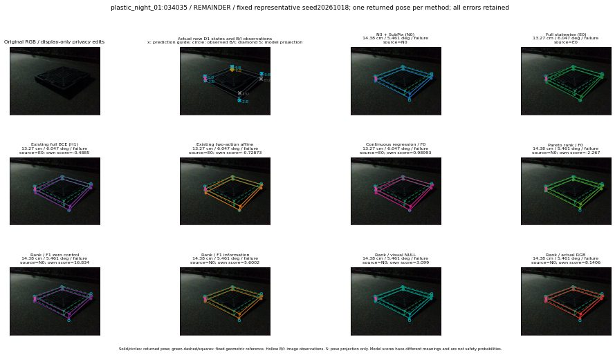

실선은 반환 자세, 초록 점선은 고정 기하 참조입니다. S는 영상 관측이 아닙니다. 점수는 모델별 의미가 다르며 보정된 안전 확률이 아닙니다. 개인정보 처리는 표시 사본에만 적용했습니다.
| 방법·seed | 위치 / 회전 / 공동성공 | 실제 출처 | 선택 후보 | 각 모델 자체 점수 |
|---|---|---|---|---|
| N0 | 14.38 cm / 5.461 deg / failure | N0 | N/A | N/A |
| E0 | 13.27 cm / 6.047 deg / failure | E0 | N/A | N/A |
| E0_REGENERATED | 13.27 cm / 6.047 deg / failure | E0 | E0_REGENERATED | N/A |
| POSEFIX_SUBPIX_PF_ANCHOR | 16.86 cm / 4.45 deg / failure | OTHER | N/A | N/A |
| POSEFIX_SUBPIX_YOLO_ANCHOR | 16.95 cm / 4.534 deg / failure | OTHER | N/A | N/A |
| D1_H1_MLP_s20261018 | 13.27 cm / 6.047 deg / failure | E0 | E0_REGENERATED | -0.48849889636039734 |
| D1_H1_MLP_s20261019 | 13.27 cm / 6.047 deg / failure | E0 | E0_REGENERATED | -0.351300448179245 |
| D1_H1_MLP_s20261020 | 13.27 cm / 6.047 deg / failure | E0 | E0_REGENERATED | -1.5897215604782104 |
| D1_H1_PAIR_MLP_s20261018 | 14.38 cm / 5.461 deg / failure | N0 | N0 | -1.559294581413269 |
| D1_H1_PAIR_MLP_s20261019 | 14.38 cm / 5.461 deg / failure | N0 | N0 | -1.3554902076721191 |
| D1_H1_PAIR_MLP_s20261020 | 14.38 cm / 5.461 deg / failure | N0 | N0 | -2.051577568054199 |
| D1_H1_PAIR_ROLE_AFFINE_s20261018 | 13.27 cm / 6.047 deg / failure | E0 | E0_REGENERATED | -0.7287257313728333 |
| D1_H1_PAIR_ROLE_AFFINE_s20261019 | 13.27 cm / 6.047 deg / failure | E0 | E0_REGENERATED | -0.8170664310455322 |
| D1_H1_PAIR_ROLE_AFFINE_s20261020 | 14.38 cm / 5.461 deg / failure | N0 | N0 | -0.607410192489624 |
| R_CONT_F0_s20261018 | 13.27 cm / 6.047 deg / failure | E0 | E0_REGENERATED | 0.9899270534515381 |
| R_CONT_F0_s20261019 | 13.27 cm / 6.047 deg / failure | E0 | E0_REGENERATED | 1.1312036514282227 |
| R_CONT_F0_s20261020 | 13.27 cm / 6.047 deg / failure | E0 | E0_REGENERATED | 1.1781420707702637 |
| R_ORDER_F0_s20261018 | 14.38 cm / 5.461 deg / failure | N0 | N0 | -2.266958713531494 |
| R_ORDER_F0_s20261019 | 14.38 cm / 5.461 deg / failure | N0 | N0 | -2.605078935623169 |
| R_ORDER_F0_s20261020 | 14.38 cm / 5.461 deg / failure | N0 | N0 | -8.956048965454102 |
| R_ORDER_F1_ZERO_s20261018 | 14.38 cm / 5.461 deg / failure | N0 | N0 | 16.833778381347656 |
| R_ORDER_F1_ZERO_s20261019 | 13.12 cm / 87.73 deg / failure | OTHER | G13/SWAPPED_WD/selected | 3.8961780071258545 |
| R_ORDER_F1_ZERO_s20261020 | 13.27 cm / 6.047 deg / failure | E0 | E0_REGENERATED | 4.054256439208984 |
| R_ORDER_F1_s20261018 | 14.38 cm / 5.461 deg / failure | N0 | N0 | 5.6001996994018555 |
| R_ORDER_F1_s20261019 | 14.38 cm / 5.461 deg / failure | N0 | N0 | 6.0949320793151855 |
| R_ORDER_F1_s20261020 | 14.38 cm / 5.461 deg / failure | N0 | N0 | 0.11523310840129852 |
| V_ORDER_NULL_s20261018 | 14.38 cm / 5.461 deg / failure | N0 | N0 | 3.099022388458252 |
| V_ORDER_NULL_s20261019 | 14.38 cm / 5.461 deg / failure | N0 | N0 | 1.3537222146987915 |
| V_ORDER_NULL_s20261020 | 14.38 cm / 5.461 deg / failure | N0 | N0 | 0.7812492251396179 |
| V_ORDER_RGB_s20261018 | 14.38 cm / 5.461 deg / failure | N0 | N0 | 8.140556335449219 |
| V_ORDER_RGB_s20261019 | 14.38 cm / 5.461 deg / failure | N0 | N0 | 0.6190991401672363 |
| V_ORDER_RGB_s20261020 | 14.38 cm / 5.461 deg / failure | N0 | N0 | -7.883717060089111 |